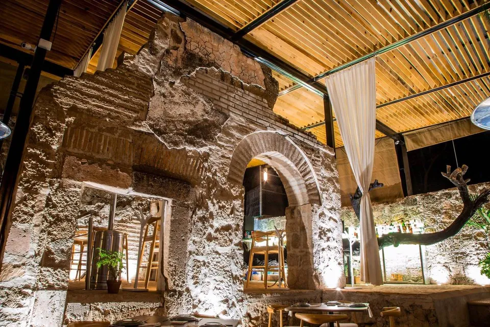
Av Tecnológico 102
Ojocaliente
Comida de casabajo el arco.
Restaurante y salón de eventos. Mar a sáb.
A su término,como lo pediste.
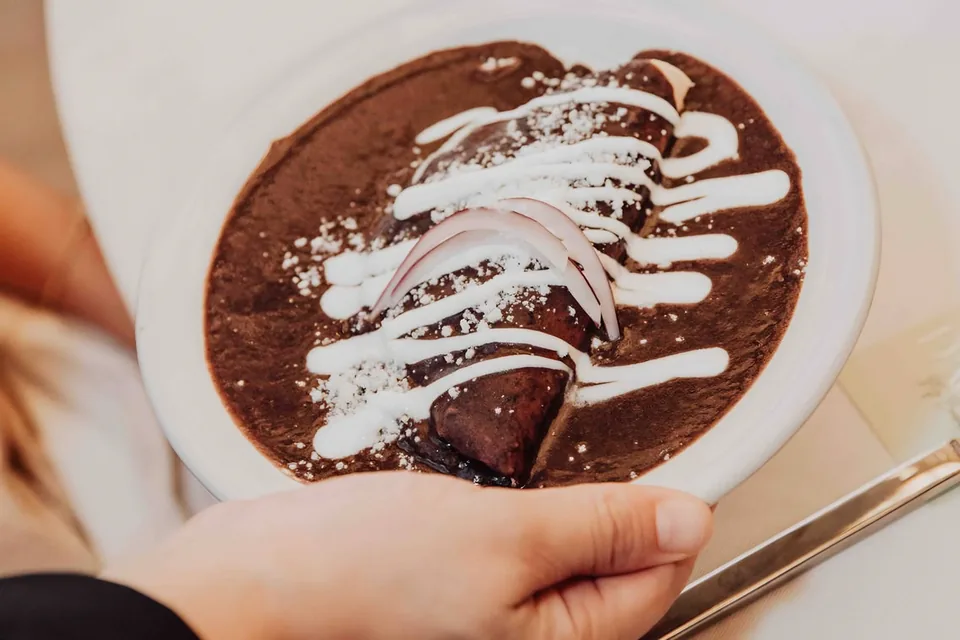
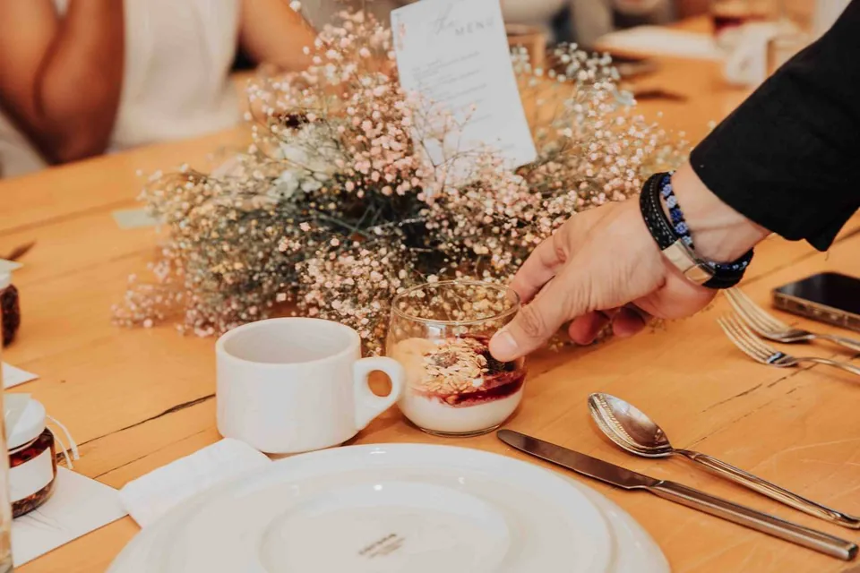
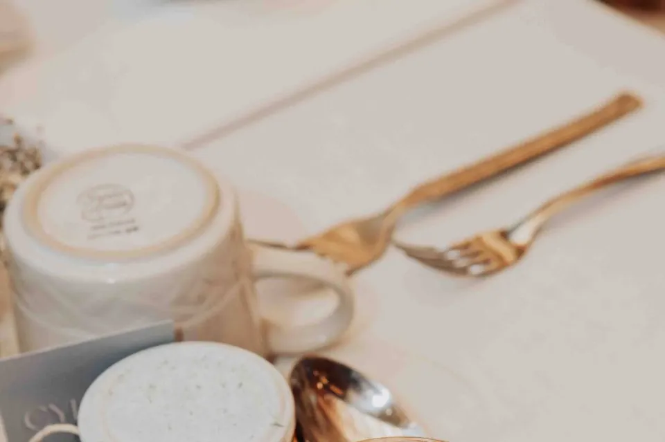
- EntradasPregunta el precio
- Platillos y carnesPregunta el precio
- PostresPregunta el precio
- BebidasPregunta el precio
- Carnesa su término, como lo pediste
- Ingredientesfrescos del día
- Bak’ bak’el favorito de quien ya vino
Cocina mexicana. Así lo cuentan en Google quienes ya comieron aquí.
Pídenos el menú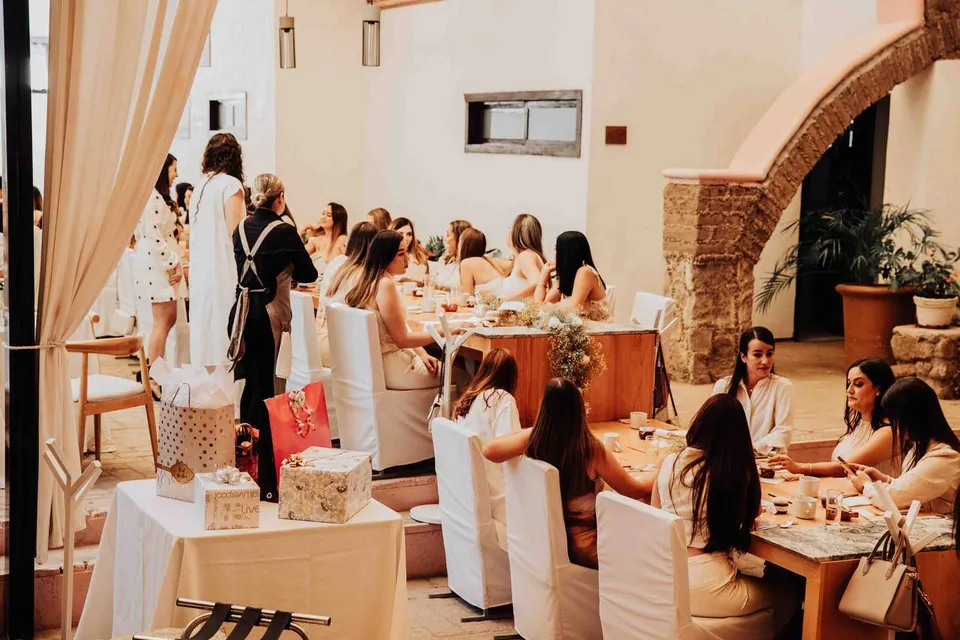
Aquí cabetoda tu gente.
- Jardín
- Terraza
- Pista de baile
- Barra
- Cocina para tu catering
- Valet parking
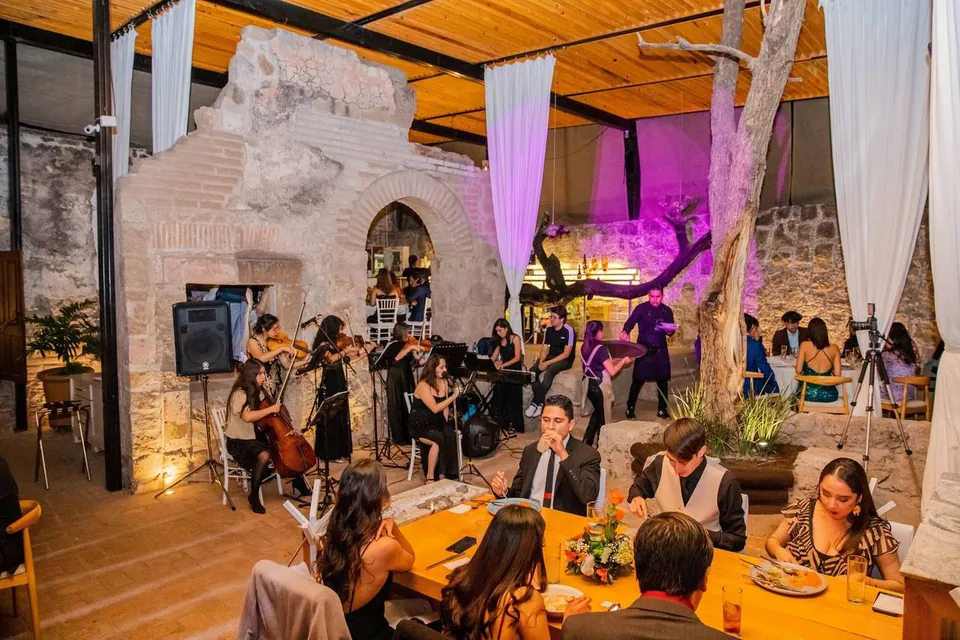
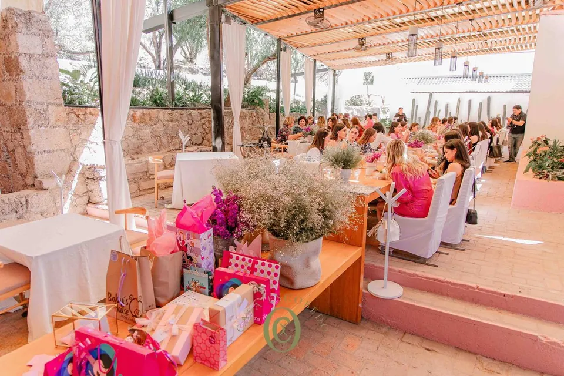
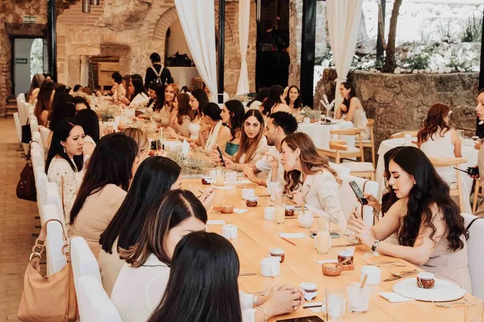
Elige tu rincón,nosotros lo armamos.
1 Tu evento
2 Tu rincón
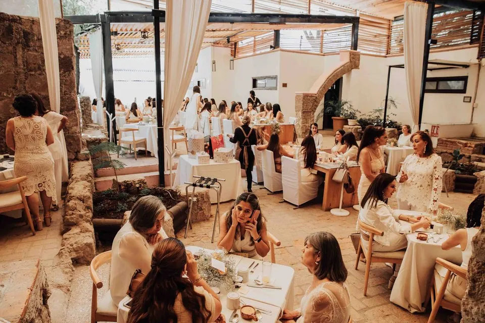
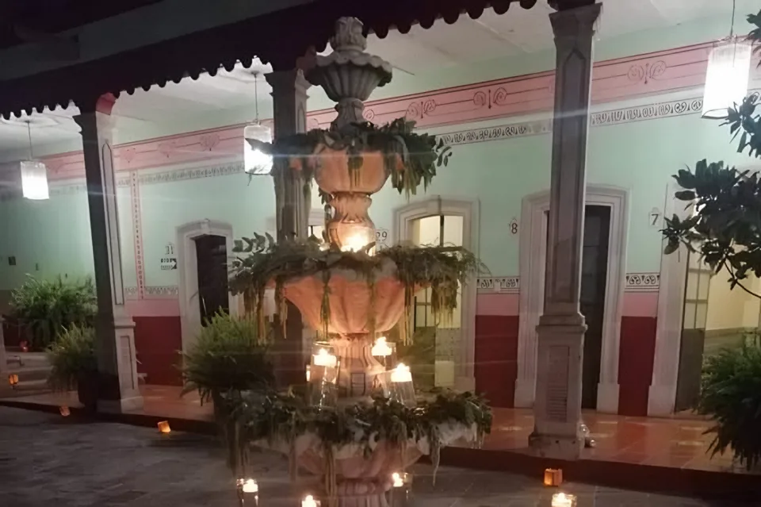
El arco de piedra
3 Tus invitados
Así te llega el mensaje
Quiero ver mi fechaRecorrido
Piedra, carrizoy luz de tarde.
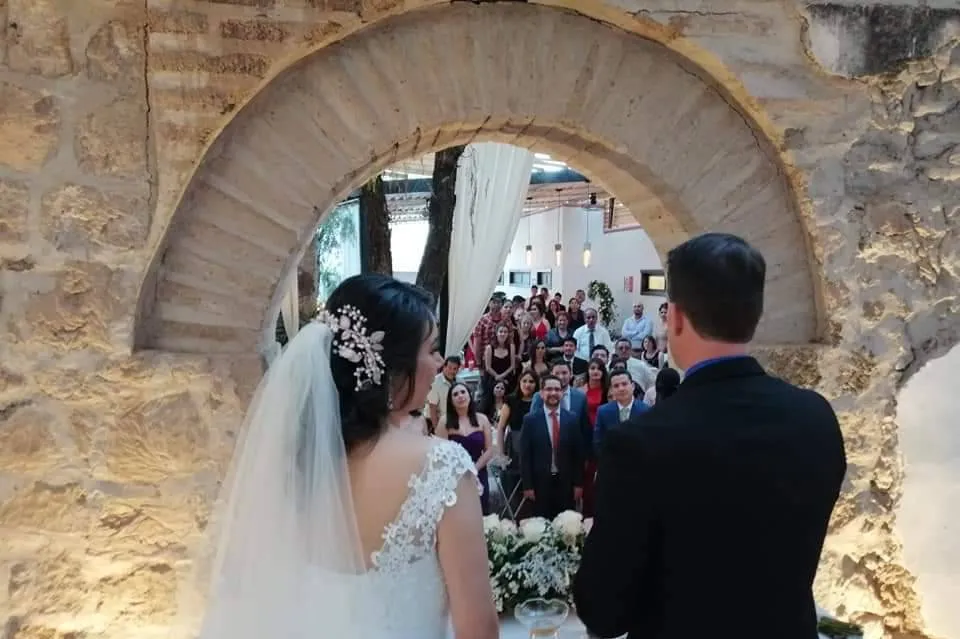
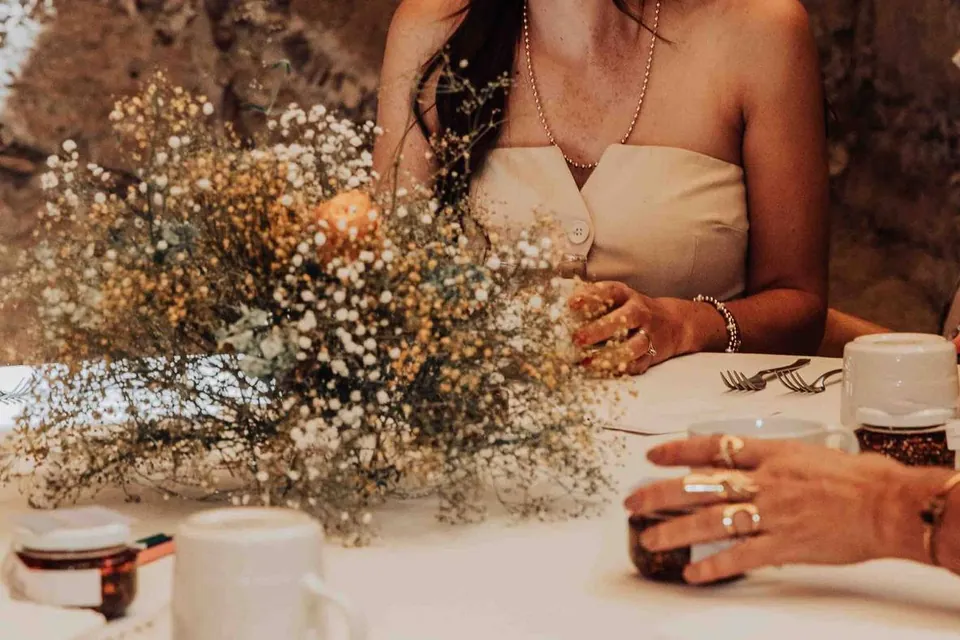
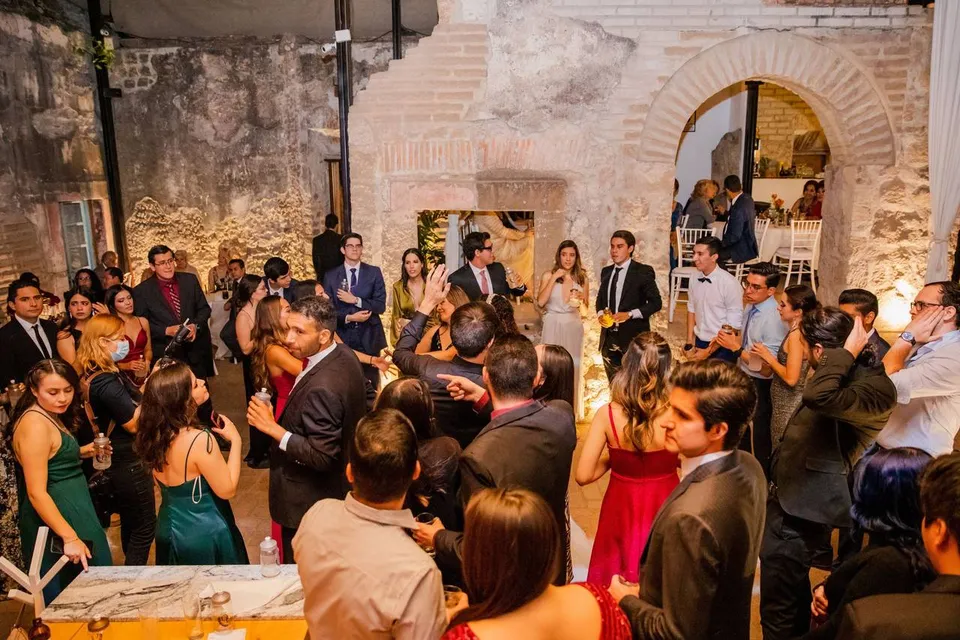
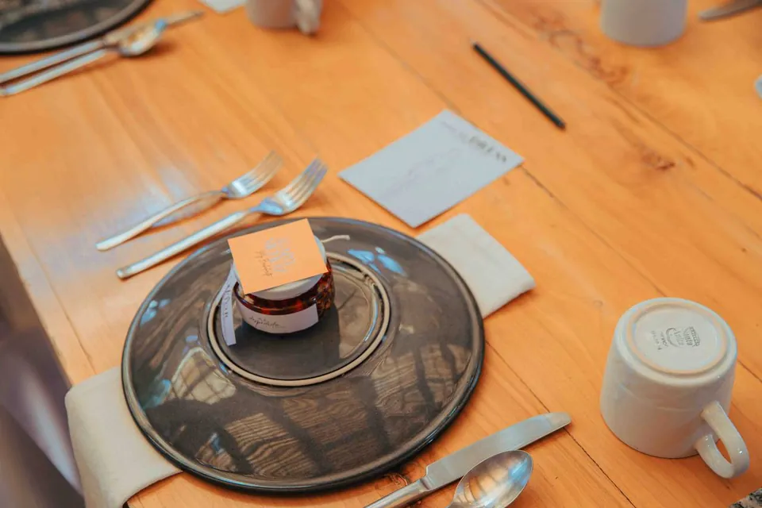
1 / 6
Más fotos en Instagram →4.4
★★★★★
1,119 opiniones en Google
4.8 de 5 en bodas.com.mx
Lo cuentanquienes ya vinieron.
★★★★★
Excelente comida, lugar y atención (…) respetaron los términos de las carnes y el sabor fue exquisito. Sin duda el mejor platillo a mi gusto fue el bak' bak’.
★★★★★
Julio y su equipo son de lo mejor que recomiendo para todo evento. Es nuestro lugar favorito en Aguascalientes.
★★★★★
Calidad de alimentos excepcional. El servicio por parte del personal de lo mejor
★★★★★
Julio es un gran anfitrion lo tiene todo controlado, es super amable y flexible, el lugar es hermoso
★★★★★
La atención a los detalles y respuesta a nuestras necesidades hicieron de nuestra boda civil y recepción un momento inolvidable. El ambiente es romántico y acogedor.
★★★★★
¡Muy linda atención por parte de Cindy y Julio, la comida estuvo deliciosa!
Antes de apartartu fecha.
¿Cuántos invitados caben?
Hasta 145, entre patio, jardín y terraza.
¿Puedo hacer la ceremonia civil aquí?
Sí. La ceremonia se hace bajo el arco de piedra y la recepción sigue en el patio.
¿Ustedes ponen la comida?
Sí: banquete, barra y cocina para el catering. Pídenos el menú por WhatsApp.
¿Qué más me pueden armar?
Decoración, música, fotografía y pista de baile.
¿Hay dónde estacionarse?
Sí, estacionamiento y valet parking.
¿Abren como restaurante?
Martes a viernes de 1:00 a 7:00 p.m. y sábado de 1:30 a 6:00 p.m.
Así se aparta
- 1Nos escribes fecha, tipo de evento e invitados.
- 2Vienes a conocer el patio, martes a sábado desde la 1:00 p.m.
- 3Apartas tu fecha y armamos menú, barra y decoración.
Dentro de Baños Termales de Ojocaliente
Visítanos
Te esperamosen Ojocaliente.
Av Tecnológico 102, Ojocaliente
20190 Aguascalientes, Ags.
Martes a sábado, desde la 1:00 p.m.
- Martes1:00 a 7:00 p.m.
- Miércoles1:00 a 7:00 p.m.
- Jueves1:00 a 7:00 p.m.
- Viernes1:00 a 7:00 p.m.
- Sábado1:30 a 6:00 p.m.
- DomingoCerrado
- LunesCerrado
Todo listopara completar.
Pásanoslo por el mismo chat donde te llegó esta muestra.
- Paquetes y precios de tus eventos
- Tu menú con platillos y precios
- Fotos tuyas de comida y de tu patio
- El WhatsApp donde quieres los mensajes